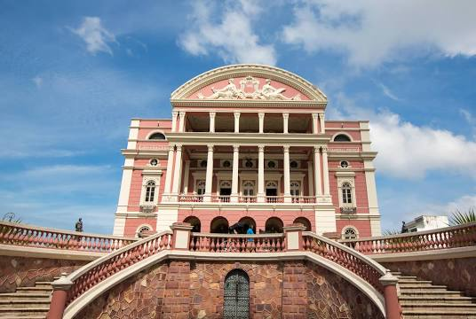
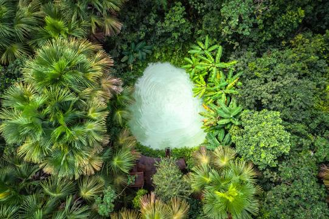
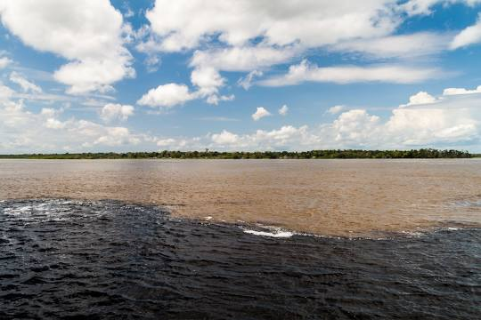

Teatro Amazonas
O Teatro Amazonas é um dos mais importantes teatros do Brasil e o principal cartão-postal da cidade de Manaus. Localizado no Largo de São Sebastião, no Centro Histórico, foi inaugurado em 1896 para atender ao desejo da elite amazonense da época, que idealizava a cidade à altura dos grandes centros culturais.
Parque do jalapão
O parque estadual do Jalapão é uma unidade de conservação brasileira de proteção integral à natureza localizada na região leste do estado do Tocantins. O território do parque, com uma área de 158 970,95 ha, está distribuído pelos municípios de Mateiros e São Félix do Tocantins. Criado em 12 de janeiro de 2001, Jalapão é o maior parque estadual do Tocantins.
Encontro das águas
O encontro das águas é um fenômeno natural facilmente visto em muitos rios da Amazônia. Os fatores para isso ocorrer na região variam desde questões geológicas, climáticas, termais ou até mesmo o tamanho ou a acidez dos rios. O mais famoso encontro das águas está localizado na frente da cidade de Manaus, entre os rios Negro e Solimões, sendo uma das principais atrações turísticas da capital amazonense.